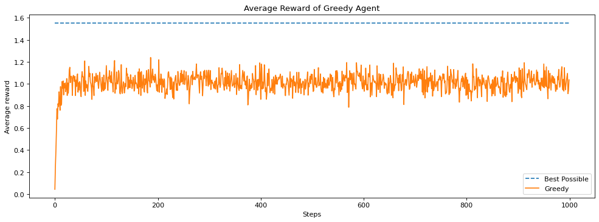
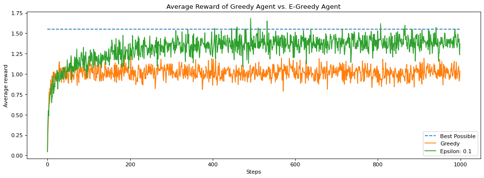
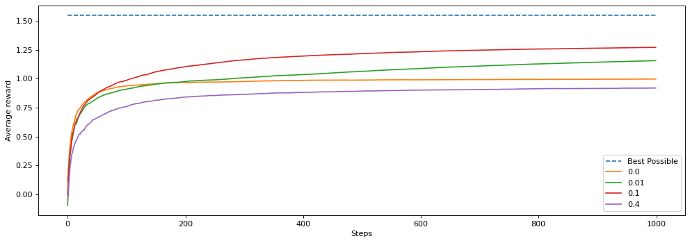
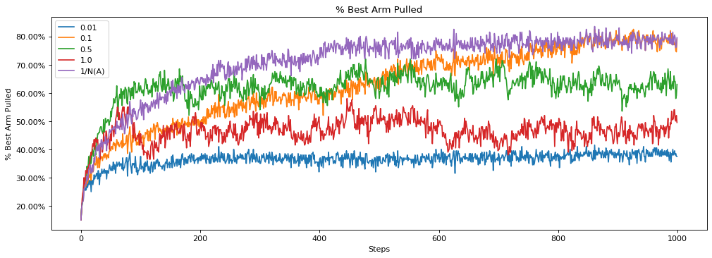
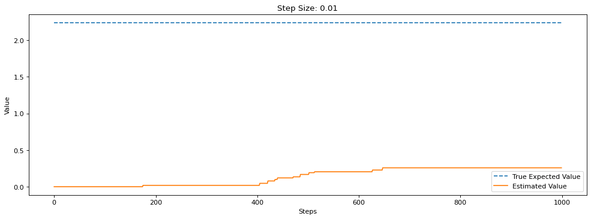
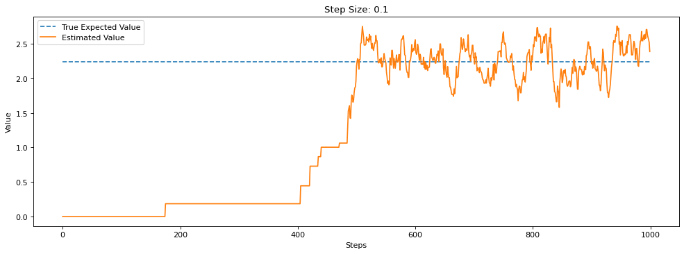
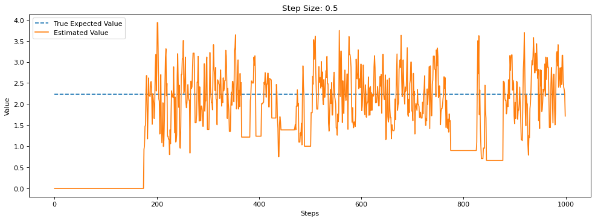
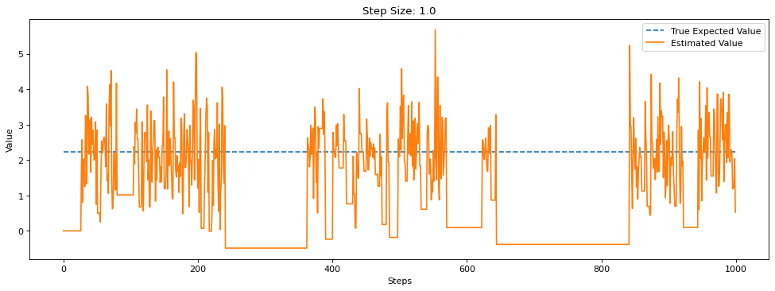
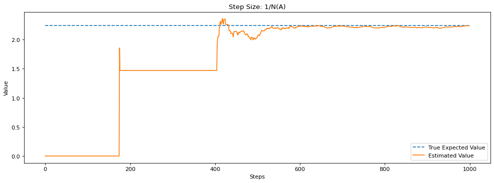
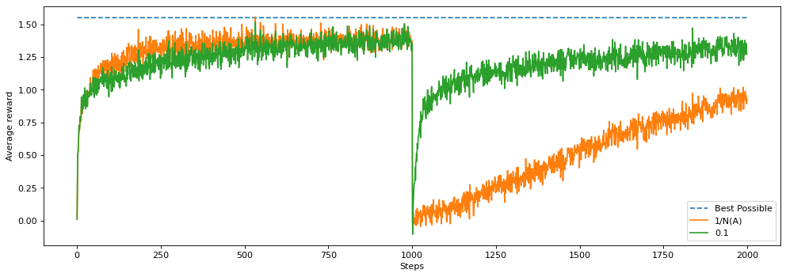

from __future__ import print_function
from abc import ABCMeta, abstractmethod
class BaseAgent:
"""Implements the agent for an RL-Glue environment.
Note:
agent_init, agent_start, agent_step, agent_end, agent_cleanup, and
agent_message are required methods.
"""
__metaclass__ = ABCMeta
def __init__(self):
pass
@abstractmethod
def agent_init(self, agent_info= {}):
"""Setup for the agent called when the experiment first starts."""
@abstractmethod
def agent_start(self, observation):
"""The first method called when the experiment starts, called after
the environment starts.
Args:
observation (Numpy array): the state observation from the environment's evn_start function.
Returns:
The first action the agent takes.
"""
@abstractmethod
def agent_step(self, reward, observation):
"""A step taken by the agent.
Args:
reward (float): the reward received for taking the last action taken
observation (Numpy array): the state observation from the
environment's step based, where the agent ended up after the
last step
Returns:
The action the agent is taking.
"""
@abstractmethod
def agent_end(self, reward):
"""Run when the agent terminates.
Args:
reward (float): the reward the agent received for entering the terminal state.
"""
@abstractmethod
def agent_cleanup(self):
"""Cleanup done after the agent ends."""
@abstractmethod
def agent_message(self, message):
"""A function used to pass information from the agent to the experiment.
Args:
message: The message passed to the agent.
Returns:
The response (or answer) to the message.
"""Objective of this notebook are to: - Help you understand the bandit problem - Understand the effects of epsilon on exploration and learn about exploitation/exploration trade-off - Introduce some of essential RL softwares that are useful to build a RL solver.
Section 0: Preliminaries
Firstly, we will build a BaseAgent for our RL
class Agent(BaseAgent):
"""agent does *no* learning, selects action 0 always"""
def __init__(self):
self.last_action = None
self.num_actions = None
self.q_values = None
self.step_size = None
self.epsilon = None
self.initial_value = 0.0
self.arm_count = [0.0 for _ in range(10)]
def agent_init(self, agent_info={}):
"""Setup for the agent called when the experiment first starts."""
# if "actions" in agent_info:
# self.num_actions = agent_info["actions"]
# if "state_array" in agent_info:
# self.q_values = agent_info["state_array"]
self.num_actions = agent_info.get("num_actions", 2)
self.initial_value = agent_info.get("initial_value", 0.0)
self.q_values = np.ones(agent_info.get("num_actions", 2)) * self.initial_value
self.step_size = agent_info.get("step_size", 0.1)
self.epsilon = agent_info.get("epsilon", 0.0)
self.last_action = 0
def agent_start(self, observation):
"""The first method called when the experiment starts, called after
the environment starts.
Args:
observation (Numpy array): the state observation from the
environment's evn_start function.
Returns:
The first action the agent takes.
"""
self.last_action = np.random.choice(self.num_actions) # set first action to 0
return self.last_action
def agent_step(self, reward, observation):
"""A step taken by the agent.
Args:
reward (float): the reward received for taking the last action taken
observation (Numpy array): the state observation from the
environment's step based, where the agent ended up after the
last step
Returns:
The action the agent is taking.
"""
# local_action = 0 # choose the action here
self.last_action = np.random.choice(self.num_actions)
return self.last_action
def agent_end(self, reward):
"""Run when the agent terminates.
Args:
reward (float): the reward the agent received for entering the
terminal state.
"""
pass
def agent_cleanup(self):
"""Cleanup done after the agent ends."""
pass
def agent_message(self, message):
"""A function used to pass information from the agent to the experiment.
Args:
message: The message passed to the agent.
Returns:
The response (or answer) to the message.
"""
passThen, we create an Environment and its abstract for our RL. This is the 10-armed Testbed introduced in section 2.3 of the textbook. We use this throughout this notebook to test our bandit agents. It has 10 arms, which are the actions the agent can take. Pulling an arm generates a stochastic reward from a Gaussian distribution with unit-variance. For each action, the expected value of that action is randomly sampled from a normal distribution, at the start of each run. If you are unfamiliar with the 10-armed Testbed please review it in the textbook before continuing.
"""Abstract environment base class.
"""
from __future__ import print_function
from abc import ABCMeta, abstractmethod
class BaseEnvironment:
"""Implements the environment for an RLGlue environment
Note:
env_init, env_start, env_step, env_cleanup, and env_message are required
methods.
"""
__metaclass__ = ABCMeta
def __init__(self):
reward = None
observation = None
termination = None
self.reward_obs_term = (reward, observation, termination)
@abstractmethod
def env_init(self, env_info={}):
"""Setup for the environment called when the experiment first starts.
Note:
Initialize a tuple with the reward, first state observation, boolean
indicating if it's terminal.
"""
@abstractmethod
def env_start(self):
"""The first method called when the experiment starts, called before the
agent starts.
Returns:
The first state observation from the environment.
"""
@abstractmethod
def env_step(self, action):
"""A step taken by the environment.
Args:
action: The action taken by the agent
Returns:
(float, state, Boolean): a tuple of the reward, state observation,
and boolean indicating if it's terminal.
"""
@abstractmethod
def env_cleanup(self):
"""Cleanup done after the environment ends"""
@abstractmethod
def env_message(self, message):
"""A message asking the environment for information
Args:
message: the message passed to the environment
Returns:
the response (or answer) to the message
"""class Environment(BaseEnvironment):
"""Implements the environment for an RLGlue environment
Note:
env_init, env_start, env_step, env_cleanup, and env_message are required
methods.
"""
actions = [0]
def __init__(self):
reward = None
observation = None
termination = None
self.reward_obs_term = (reward, observation, termination)
self.count = 0
self.arms = []
self.seed = None
def env_init(self, env_info={}):
"""Setup for the environment called when the experiment first starts.
Note:
Initialize a tuple with the reward, first state observation, boolean
indicating if it's terminal.
"""
self.arms = np.random.randn(10)#[np.random.normal(0.0, 1.0) for _ in range(10)]
local_observation = 0 # An empty NumPy array
self.reward_obs_term = (0.0, local_observation, False)
def env_start(self):
"""The first method called when the experiment starts, called before the
agent starts.
Returns:
The first state observation from the environment.
"""
return self.reward_obs_term[1]
def env_step(self, action):
"""A step taken by the environment.
Args:
action: The action taken by the agent
Returns:
(float, state, Boolean): a tuple of the reward, state observation,
and boolean indicating if it's terminal.
"""
# if action == 0:
# if np.random.random() < 0.2:
# reward = 14
# else:
# reward = 6
# if action == 1:
# reward = np.random.choice(range(10,14))
# if action == 2:
# if np.random.random() < 0.8:
# reward = 174
# else:
# reward = 7
# reward = np.random.normal(self.arms[action], 1.0)
reward = self.arms[action] + np.random.randn()
obs = self.reward_obs_term[1]
self.reward_obs_term = (reward, obs, False)
return self.reward_obs_term
def env_cleanup(self):
"""Cleanup done after the environment ends"""
pass
def env_message(self, message):
"""A message asking the environment for information
Args:
message (string): the message passed to the environment
Returns:
string: the response (or answer) to the message
"""
if message == "what is the current reward?":
return "{}".format(self.reward_obs_term[0])
# else
return "I don't know how to respond to your message"Here, we create RLGlue which was originally designed by Adam White, Brian Tanner, and Rich Sutton. This library will give you a solid framework to understand how reinforcement learning experiments work and how to run your own.
class RLGlue:
"""RLGlue class
args:
env_name (string): the name of the module where the Environment class can be found
agent_name (string): the name of the module where the Agent class can be found
"""
def __init__(self, env_class, agent_class):
self.environment = env_class()
self.agent = agent_class()
self.total_reward = None
self.last_action = None
self.num_steps = None
self.num_episodes = None
def rl_init(self, agent_init_info={}, env_init_info={}):
"""Initial method called when RLGlue experiment is created"""
self.environment.env_init(env_init_info)
self.agent.agent_init(agent_init_info)
self.total_reward = 0.0
self.num_steps = 0
self.num_episodes = 0
def rl_start(self, agent_start_info={}, env_start_info={}):
"""Starts RLGlue experiment
Returns:
tuple: (state, action)
"""
last_state = self.environment.env_start()
self.last_action = self.agent.agent_start(last_state)
observation = (last_state, self.last_action)
return observation
def rl_agent_start(self, observation):
"""Starts the agent.
Args:
observation: The first observation from the environment
Returns:
The action taken by the agent.
"""
return self.agent.agent_start(observation)
def rl_agent_step(self, reward, observation):
"""Step taken by the agent
Args:
reward (float): the last reward the agent received for taking the
last action.
observation : the state observation the agent receives from the
environment.
Returns:
The action taken by the agent.
"""
return self.agent.agent_step(reward, observation)
def rl_agent_end(self, reward):
"""Run when the agent terminates
Args:
reward (float): the reward the agent received when terminating
"""
self.agent.agent_end(reward)
def rl_env_start(self):
"""Starts RL-Glue environment.
Returns:
(float, state, Boolean): reward, state observation, boolean
indicating termination
"""
self.total_reward = 0.0
self.num_steps = 1
this_observation = self.environment.env_start()
return this_observation
def rl_env_step(self, action):
"""Step taken by the environment based on action from agent
Args:
action: Action taken by agent.
Returns:
(float, state, Boolean): reward, state observation, boolean
indicating termination.
"""
ro = self.environment.env_step(action)
(this_reward, _, terminal) = ro
self.total_reward += this_reward
if terminal:
self.num_episodes += 1
else:
self.num_steps += 1
return ro
def rl_step(self):
"""Step taken by RLGlue, takes environment step and either step or
end by agent.
Returns:
(float, state, action, Boolean): reward, last state observation,
last action, boolean indicating termination
"""
(reward, last_state, term) = self.environment.env_step(self.last_action)
self.total_reward += reward
if term:
self.num_episodes += 1
self.agent.agent_end(reward)
roat = (reward, last_state, None, term)
else:
self.num_steps += 1
self.last_action = self.agent.agent_step(reward, last_state)
roat = (reward, last_state, self.last_action, term)
return roat
def rl_cleanup(self):
"""Cleanup done at end of experiment."""
self.environment.env_cleanup()
self.agent.agent_cleanup()
def rl_agent_message(self, message):
"""Message passed to communicate with agent during experiment
Args:
message: the message (or question) to send to the agent
Returns:
The message back (or answer) from the agent
"""
return self.agent.agent_message(message)
def rl_env_message(self, message):
"""Message passed to communicate with environment during experiment
Args:
message: the message (or question) to send to the environment
Returns:
The message back (or answer) from the environment
"""
return self.environment.env_message(message)
def rl_episode(self, max_steps_this_episode):
"""Runs an RLGlue episode
Args:
max_steps_this_episode (Int): the maximum steps for the experiment to run in an episode
Returns:
Boolean: if the episode should terminate
"""
is_terminal = False
self.rl_start()
while (not is_terminal) and ((max_steps_this_episode == 0) or
(self.num_steps < max_steps_this_episode)):
rl_step_result = self.rl_step()
is_terminal = rl_step_result[3]
return is_terminal
def rl_return(self):
"""The total reward
Returns:
float: the total reward
"""
return self.total_reward
def rl_num_steps(self):
"""The total number of steps taken
Returns:
Int: the total number of steps taken
"""
return self.num_steps
def rl_num_episodes(self):
"""The number of episodes
Returns
Int: the total number of episodes
"""
return self.num_episodes# Import necessary libraries
%matplotlib inline
import numpy as np
import matplotlib.pyplot as plt
from tqdm import tqdm
import timeSection 1: Greedy Agent
We want to create an agent that will find the action with the highest expected reward. One way an agent could operate is to always choose the action with the highest value based on the agent’s current estimates. This is called a greedy agent as it greedily chooses the action that it thinks has the highest value. Let’s look at what happens in this case.
First we are going to implement the argmax function, which takes in a list of action values and returns an action with the highest value. Why are we implementing our own instead of using the argmax function that numpy uses? Numpy’s argmax function returns the first instance of the highest value. We do not want that to happen as it biases the agent to choose a specific action in the case of ties. Instead we want to break ties between the highest values randomly. So we are going to implement our own argmax function. You may want to look at np.random.choice to randomly select from a list of values.
def argmax(q_values):
"""
Takes in a list of q_values and returns the index of the item
with the highest value. Breaks ties randomly.
returns: int - the index of the highest value in q_values
"""
top_value = float("-inf")
ties = []
for i in range(len(q_values)):
# if a value in q_values is greater than the highest value update top and reset ties to zero
# if a value is equal to top value add the index to ties
# return a random selection from ties.
# YOUR CODE HERE
if q_values[i] > top_value:
top_value = q_values[i]
ties = [i]
elif q_values[i] == top_value:
ties.append(i)
return np.random.choice(ties)Next, we are going to create a GreedyAgent and implement the agent_step method. This method gets called each time the agent takes a step. The method has to return the action selected by the agent. This method also ensures the agent’s estimates are updated based on the signals it gets from the environment.
class GreedyAgent(Agent):
def agent_step(self, reward, observation=None):
"""
Takes one step for the agent. It takes in a reward and observation and
returns the action the agent chooses at that time step.
Arguments:
reward -- float, the reward the agent recieved from the environment after taking the last action.
observation -- float, the observed state the agent is in. Do not worry about this as you will not use it
until future lessons
Returns:
current_action -- int, the action chosen by the agent at the current time step.
"""
### Useful Class Variables ###
# self.q_values : An array with what the agent believes each of the values of the arm are.
# self.arm_count : An array with a count of the number of times each arm has been pulled.
# self.last_action : The action that the agent took on the previous time step
#######################
# Update Q values Hint: Look at the algorithm in section 2.4 of the textbook.
# increment the counter in self.arm_count for the action from the previous time step
# update the step size using self.arm_count
# update self.q_values for the action from the previous time step
self.arm_count[self.last_action] += 1
self.q_values[self.last_action] += (reward - self.q_values[self.last_action]) / self.arm_count[self.last_action]
current_action = argmax(self.q_values)
self.last_action = current_action
return current_action
Then, let’s visualize the result
num_runs = 200 # The number of times we run the experiment
num_steps = 1000 # The number of pulls of each arm the agent takes
env = Environment # We set what environment we want to use to test
agent = GreedyAgent # We choose what agent we want to use
agent_info = {"num_actions": 10} # We pass the agent the information it needs. Here how many arms there are.
env_info = {} # We pass the environment the information it needs. In this case nothing.
rewards = np.zeros((num_runs, num_steps))
average_best = 0
for run in tqdm(range(num_runs)): # tqdm is what creates the progress bar below
np.random.seed(run)
rl_glue = RLGlue(env, agent) # Creates a new RLGlue experiment with the env and agent we chose above
rl_glue.rl_init(agent_info, env_info) # We pass RLGlue what it needs to initialize the agent and environment
rl_glue.rl_start() # We start the experiment
average_best += np.max(rl_glue.environment.arms)
for i in range(num_steps):
reward, _, action, _ = rl_glue.rl_step() # The environment and agent take a step and return
# the reward, and action taken.
rewards[run, i] = reward
greedy_scores = np.mean(rewards, axis=0)
plt.figure(figsize=(15, 5), dpi= 80, facecolor='w', edgecolor='k')
plt.plot([average_best / num_runs for _ in range(num_steps)], linestyle="--")
plt.plot(greedy_scores)
plt.legend(["Best Possible", "Greedy"])
plt.title("Average Reward of Greedy Agent")
plt.xlabel("Steps")
plt.ylabel("Average reward")
plt.show()100%|██████████| 200/200 [00:03<00:00, 63.50it/s]
Section 2: Epsilon-Greedy Agent
We noticed about a trade off between Exploitation and Exploration, where it does not always take the greedy action. Instead, sometimes it takes an exploratory action. It does this so that it can find out what the best action really is. If we always choose what we think is the current best action is, we may miss out on taking the true best action, because we haven’t explored enough times to find that best action.
Implement an epsilon-greedy agent below. Hint: we are implementing the algorithm from section 2.4 of this textbook. You may want to use your greedy code from above and look at np.random.random, as well as np.random.randint, to help you select random actions.
class EpsilonGreedyAgent(Agent):
def agent_step(self, reward, observation):
"""
Takes one step for the agent. It takes in a reward and observation and
returns the action the agent chooses at that time step.
Arguments:
reward -- float, the reward the agent recieved from the environment after taking the last action.
observation -- float, the observed state the agent is in. Do not worry about this as you will not use it
until future lessons
Returns:
current_action -- int, the action chosen by the agent at the current time step.
"""
### Useful Class Variables ###
# self.q_values : An array with what the agent believes each of the values of the arm are.
# self.arm_count : An array with a count of the number of times each arm has been pulled.
# self.last_action : The action that the agent took on the previous time step
# self.epsilon : The probability an epsilon greedy agent will explore (ranges between 0 and 1)
#######################
# Update Q values - this should be the same update as your greedy agent above
self.arm_count[self.last_action] += 1
self.q_values[self.last_action] += (reward - self.q_values[self.last_action]) / self.arm_count[self.last_action]
# Choose action using epsilon greedy
# Randomly choose a number between 0 and 1 and see if it's less than self.epsilon
if np.random.random() < self.epsilon:
current_action = np.random.randint(len(self.q_values))
else:
current_action = argmax(self.q_values)
self.last_action = current_action
return current_actionNow that we have our epsilon greedy agent created. Let’s compare it against the greedy agent with epsilon of 0.1.
# Plot Epsilon greedy results and greedy results
num_runs = 200
num_steps = 1000
epsilon = 0.1
agent = EpsilonGreedyAgent
env = Environment # ten arms
agent_info = {"num_actions": 10, "epsilon": epsilon}
env_info = {}
all_rewards = np.zeros((num_runs, num_steps))
for run in tqdm(range(num_runs)):
np.random.seed(run)
rl_glue = RLGlue(env, agent)
rl_glue.rl_init(agent_info, env_info)
rl_glue.rl_start()
for i in range(num_steps):
reward, _, action, _ = rl_glue.rl_step() # The environment and agent take a step and return
# the reward, and action taken.
all_rewards[run, i] = reward
# take the mean over runs
scores = np.mean(all_rewards, axis=0)
plt.figure(figsize=(15, 5), dpi= 80, facecolor='w', edgecolor='k')
plt.plot([1.55 for _ in range(num_steps)], linestyle="--")
plt.plot(greedy_scores)
plt.title("Average Reward of Greedy Agent vs. E-Greedy Agent")
plt.plot(scores)
plt.legend(("Best Possible", "Greedy", "Epsilon: 0.1"))
plt.xlabel("Steps")
plt.ylabel("Average reward")
plt.show()100%|██████████| 200/200 [00:03<00:00, 63.69it/s]
Here, we noticed how much better the epsilon-greedy agent did. Because we occasionally choose a random action we were able to find a better long term policy. By acting greedily before our value estimates are accurate, we risk settling on a suboptimal action.
Section 3: Comparing values of epsilon
Can we do better than an epsilon of 0.1? Let’s try several different values for epsilon and see how they perform. We try different settings of key performance parameters to understand how the agent might perform under different conditions.
Below we run an experiment where we sweep over different values for epsilon:
# Experiment code for different e-greedy
epsilons = [0.0, 0.01, 0.1, 0.4]
plt.figure(figsize=(15, 5), dpi= 80, facecolor='w', edgecolor='k')
plt.plot([1.55 for _ in range(num_steps)], linestyle="--")
n_q_values = []
n_averages = []
n_best_actions = []
num_runs = 200
for epsilon in epsilons:
all_averages = []
for run in tqdm(range(num_runs)):
agent = EpsilonGreedyAgent
agent_info = {"num_actions": 10, "epsilon": epsilon}
env_info = {"random_seed": run}
rl_glue = RLGlue(env, agent)
rl_glue.rl_init(agent_info, env_info)
rl_glue.rl_start()
best_arm = np.argmax(rl_glue.environment.arms)
scores = [0]
averages = []
best_action_chosen = []
for i in range(num_steps):
reward, state, action, is_terminal = rl_glue.rl_step()
scores.append(scores[-1] + reward)
averages.append(scores[-1] / (i + 1))
if action == best_arm:
best_action_chosen.append(1)
else:
best_action_chosen.append(0)
if epsilon == 0.1 and run == 0:
n_q_values.append(np.copy(rl_glue.agent.q_values))
if epsilon == 0.1:
n_averages.append(averages)
n_best_actions.append(best_action_chosen)
all_averages.append(averages)
plt.plot(np.mean(all_averages, axis=0))
plt.legend(["Best Possible"] + epsilons)
plt.xlabel("Steps")
plt.ylabel("Average reward")
plt.show()100%|██████████| 200/200 [00:04<00:00, 48.39it/s]
100%|██████████| 200/200 [00:04<00:00, 48.03it/s]
100%|██████████| 200/200 [00:03<00:00, 55.24it/s]
100%|██████████| 200/200 [00:02<00:00, 67.29it/s]
Section 4: The Effect of Step Size
In Section 1, we decayed the step size over time based on action-selection counts. The step-size was 1/N(A), where N(A) is the number of times action A was selected. This is the same as computing a sample average. We could also set the step size to be a constant value, such as 0.1. What would be the effect of doing that? And is it better to use a constant or the sample average method?
To investigate this question, let’s start by creating a new agent that has a constant step size. This will be nearly identical to the agent created above. You will use the same code to select the epsilon-greedy action. You will change the update to have a constant step size instead of using the 1/N(A) update.
class EpsilonGreedyAgentConstantStepsize(Agent):
def agent_step(self, reward, observation):
"""
Takes one step for the agent. It takes in a reward and observation and
returns the action the agent chooses at that time step.
Arguments:
reward -- float, the reward the agent recieved from the environment after taking the last action.
observation -- float, the observed state the agent is in. Do not worry about this as you will not use it
until future lessons
Returns:
current_action -- int, the action chosen by the agent at the current time step.
"""
### Useful Class Variables ###
# self.q_values : An array with what the agent believes each of the values of the arm are.
# self.arm_count : An array with a count of the number of times each arm has been pulled.
# self.last_action : An int of the action that the agent took on the previous time step.
# self.step_size : A float which is the current step size for the agent.
# self.epsilon : The probability an epsilon greedy agent will explore (ranges between 0 and 1)
#######################
# Update q_values for action taken at previous time step
# using self.step_size intead of using self.arm_count
self.arm_count[self.last_action] += 1
self.q_values[self.last_action] += self.step_size * (reward - self.q_values[self.last_action])
# Choose action using epsilon greedy. This is the same as you implemented above.
if np.random.random() < self.epsilon:
current_action = np.random.randint(len(self.q_values))
else:
current_action = argmax(self.q_values)
self.last_action = current_action
return current_action# Experiment code for different step sizes
step_sizes = [0.01, 0.1, 0.5, 1.0, '1/N(A)']
epsilon = 0.1
num_steps = 1000
num_runs = 200
fig, ax = plt.subplots(figsize=(15, 5), dpi= 80, facecolor='w', edgecolor='k')
q_values = {step_size: [] for step_size in step_sizes}
true_values = {step_size: None for step_size in step_sizes}
best_actions = {step_size: [] for step_size in step_sizes}
for step_size in step_sizes:
all_averages = []
for run in tqdm(range(num_runs)):
np.random.seed(run)
agent = EpsilonGreedyAgentConstantStepsize if step_size != '1/N(A)' else EpsilonGreedyAgent
agent_info = {"num_actions": 10, "epsilon": epsilon, "step_size": step_size, "initial_value": 0.0}
env_info = {}
rl_glue = RLGlue(env, agent)
rl_glue.rl_init(agent_info, env_info)
rl_glue.rl_start()
best_arm = np.argmax(rl_glue.environment.arms)
if run == 0:
true_values[step_size] = np.copy(rl_glue.environment.arms)
best_action_chosen = []
for i in range(num_steps):
reward, state, action, is_terminal = rl_glue.rl_step()
if action == best_arm:
best_action_chosen.append(1)
else:
best_action_chosen.append(0)
if run == 0:
q_values[step_size].append(np.copy(rl_glue.agent.q_values))
best_actions[step_size].append(best_action_chosen)
ax.plot(np.mean(best_actions[step_size], axis=0))
plt.legend(step_sizes)
plt.title("% Best Arm Pulled")
plt.xlabel("Steps")
plt.ylabel("% Best Arm Pulled")
vals = ax.get_yticks()
ax.set_yticklabels(['{:,.2%}'.format(x) for x in vals])
plt.show()100%|██████████| 200/200 [00:03<00:00, 56.86it/s]
100%|██████████| 200/200 [00:03<00:00, 60.23it/s]
100%|██████████| 200/200 [00:03<00:00, 59.37it/s]
100%|██████████| 200/200 [00:03<00:00, 59.35it/s]
100%|██████████| 200/200 [00:03<00:00, 56.94it/s]
C:\Users\ND258645\AppData\Local\Temp\ipykernel_15840\3358721971.py:48: UserWarning: FixedFormatter should only be used together with FixedLocator
ax.set_yticklabels(['{:,.2%}'.format(x) for x in vals])
Notice first that we are now plotting the amount of time that the best action is taken rather than the average reward. To better understand the performance of an agent, it can be useful to measure specific behaviors, beyond just how much reward is accumulated. This measure indicates how close the agent’s behaviour is to optimal.
It seems as though 1/N(A) performed better than the others, in that it reaches a solution where it takes the best action most frequently. Now why might this be? Why did a step size of 0.5 start out better but end up performing worse? Why did a step size of 0.01 perform so poorly?
Let’s dig into this further below. Let’s plot how well each agent tracks the true value, where each agent has a different step size method. You do not have to enter any code here, just follow along.
largest = 0
num_steps = 1000
for step_size in step_sizes:
plt.figure(figsize=(15, 5), dpi= 80, facecolor='w', edgecolor='k')
largest = np.argmax(true_values[step_size])
plt.plot([true_values[step_size][largest] for _ in range(num_steps)], linestyle="--")
plt.title("Step Size: {}".format(step_size))
plt.plot(np.array(q_values[step_size])[:, largest])
plt.legend(["True Expected Value", "Estimated Value"])
plt.xlabel("Steps")
plt.ylabel("Value")
plt.show()




These plots help clarify the performance differences between the different step sizes. A step size of 0.01 makes such small updates that the agent’s value estimate of the best action does not get close to the actual value. Step sizes of 0.5 and 1.0 both get close to the true value quickly, but are very susceptible to stochasticity in the rewards. The updates overcorrect too much towards recent rewards, and so oscillate around the true value. This means that on many steps, the action that pulls the best arm may seem worse than it actually is. A step size of 0.1 updates fairly quickly to the true value, and does not oscillate as widely around the true values as 0.5 and 1.0. This is one of the reasons that 0.1 performs quite well. Finally we see why 1/N(A) performed well. Early on while the step size is still reasonably high it moves quickly to the true expected value, but as it gets pulled more its step size is reduced which makes it less susceptible to the stochasticity of the rewards.
Does this mean that 1/N(A) is always the best? When might it not be? One possible setting where it might not be as effective is in non-stationary problems. You learned about non-stationarity in the lessons. Non-stationarity means that the environment may change over time. This could manifest itself as continual change over time of the environment, or a sudden change in the environment.
Let’s look at how a sudden change in the reward distributions affects a step size like 1/N(A). This time we will run the environment for 2000 steps, and after 1000 steps we will randomly change the expected value of all of the arms. We compare two agents, both using epsilon-greedy with epsilon = 0.1. One uses a constant step size of 0.1, the other a step size of 1/N(A) that reduces over time.
epsilon = 0.1
num_steps = 2000
num_runs = 500
step_size = 0.1
plt.figure(figsize=(15, 5), dpi= 80, facecolor='w', edgecolor='k')
plt.plot([1.55 for _ in range(num_steps)], linestyle="--")
for agent in [EpsilonGreedyAgent, EpsilonGreedyAgentConstantStepsize]:
rewards = np.zeros((num_runs, num_steps))
for run in tqdm(range(num_runs)):
agent_info = {"num_actions": 10, "epsilon": epsilon, "step_size": step_size}
np.random.seed(run)
rl_glue = RLGlue(env, agent)
rl_glue.rl_init(agent_info, env_info)
rl_glue.rl_start()
for i in range(num_steps):
reward, state, action, is_terminal = rl_glue.rl_step()
rewards[run, i] = reward
if i == 1000:
rl_glue.environment.arms = np.random.randn(10)
plt.plot(np.mean(rewards, axis=0))
plt.legend(["Best Possible", "1/N(A)", "0.1"])
plt.xlabel("Steps")
plt.ylabel("Average reward")
plt.show()100%|██████████| 500/500 [00:14<00:00, 34.20it/s]
100%|██████████| 500/500 [00:18<00:00, 27.43it/s]
Now the agent with a step size of 1/N(A) performed better at the start but then performed worse when the environment changed! What happened?
Think about what the step size would be after 1000 steps. Let’s say the best action gets chosen 500 times. That means the step size for that action is 1/500 or 0.002. At each step when we update the value of the action and the value is going to move only 0.002 * the error. That is a very tiny adjustment and it will take a long time for it to get to the true value.
The agent with step size 0.1, however, will always update in 1/10th of the direction of the error. This means that on average it will take ten steps for it to update its value to the sample mean.
These are the types of tradeoffs we have to think about in reinforcement learning. A larger step size moves us more quickly toward the true value, but can make our estimated values oscillate around the expected value. A step size that reduces over time can converge to close to the expected value, without oscillating. On the other hand, such a decaying stepsize is not able to adapt to changes in the environment. Nonstationarity—and the related concept of partial observability—is a common feature of reinforcement learning problems and when learning online.